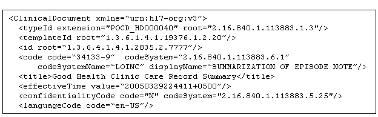
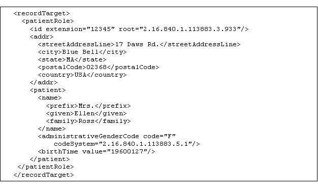
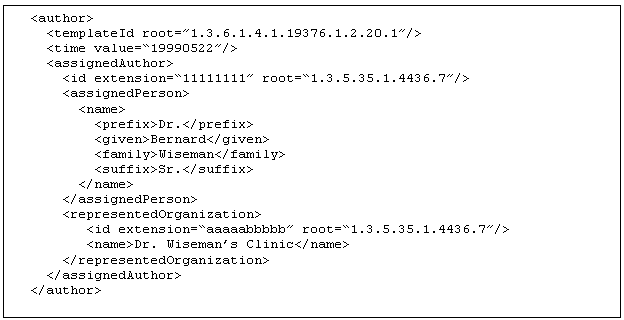
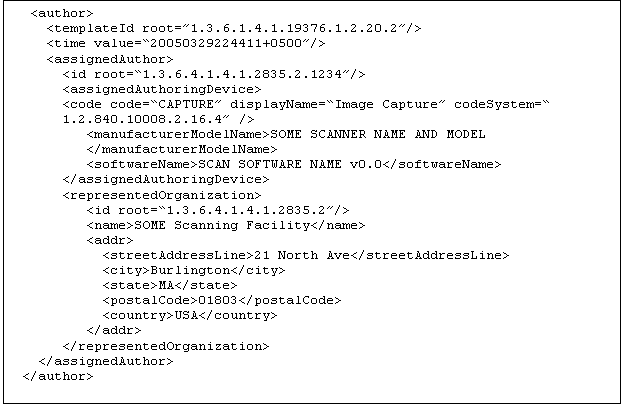
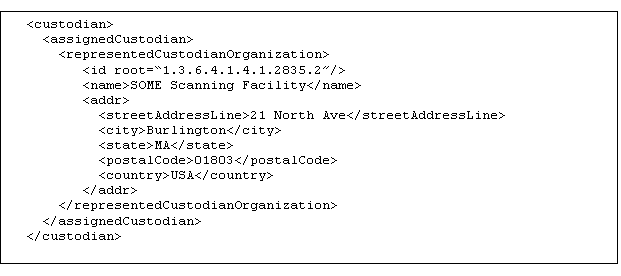
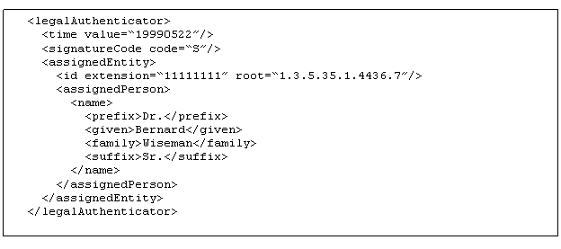
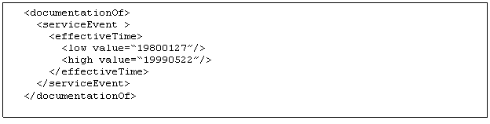
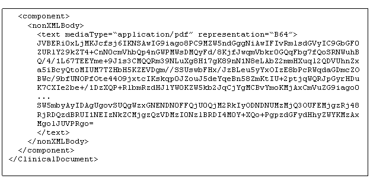
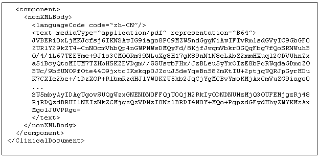

IHE IT Infrastructure (ITI)
Technical Framework
Revision 16.0 – Final Text
This section outlines the content of the HL7 CDA R2 constraints for the document. We note here that requirements specified below are to ensure the presence of a minimum amount of wrapper data in order to enhance description and facilitate sharing of the document. Implementers of this profile can and should make use of additional annotation within the CDA header to provide richer context. The examples in the following sections contain the minimal amount of wrapper data, as specified, and in many cases do make use of additional CDA header elements for enriched context.
Assumptions and Definitions : We assume that the scanning facility and equipment within it are assigned an OID and that the scanning facility assembles the wrapped scanned content. More information regarding the construction of OIDs can be found in ITI TF-2x: Appendix B. We define the following nomenclature for entity roles concerned in forming the wrapper content.
PDF and plaintext documents intended for wrapping can consist of multiple pages. Encoding of multiple page PDF documents are subject to the PDF/A standard. This ISO standard, PDF/A, is a subset of Adobe PDF version 1.4 intended to be suitable for long-term preservation of page-oriented documents. PDF/A attempts to maximize:
The constraints imposed by PDF/A include:
The PDF/A approach has several advantages over TIFF or JPEG. First, there are more image compressions and format flexibility in PDF, so that the image files sizes can be kept smaller. There are many simple programs available for converting TIFF and JPEG into PDF with various other features for improving compression or adding other information. The PDF/A enables devices that produce vectorized output. Unlike TIFF, JPEG, or BMP, a PDF/A image has the ability to provide several "layers" of information. This allows the creation of PDF searchable images.
A PDF searchable image is a PDF document with an exact bitmapped replica of the scanned paper pages and with text information stored behind the bitmap image of the page. This approach retains the look of the original pages while enabling text searchability and computer analysis. This approach is especially suitable for documents that have to be searchable while retaining the original scan details. The text layer is created by an Optical Character Recognition (OCR) application that scans the text on each page. It then creates a PDF file with the recognized text stored in a layer beneath the image of the text. Unrecognized graphics areas and annotations are preserved with full fidelity in the image. The text form may be incomplete or the OCR confused by some words, but the original image is preserved and available.
Plaintext as well as PDF/A documents shall be base-64 encoded before wrapped in a HL7 CDA R2 header. The PDF/A documents shall conform to PDF/A-1b . Creators are encouraged to conform to PDF/A-1a to the maximum extent possible, but a simple document scanner may be unable to fully conform to PDF/A-1a . Other profiles may require PDF/A-1a conformance.
HL7 CDA R2 header schema is constrained so that pertinent metadata values and scanning facility, technology and operator information shall be present ( see Section 5.2.3).
Medical imagery and photographs are outside the scope of this profile . Diagnostic or intervention medical imagery will be supported through DICOM (which includes the use of JPEG and MPEG). Additionally , audio and video recorded content is not covered by this profile.
XDS-SD is a CDA R2 document and thus conforms to the XDS Metadata requirements in the PCC TF-2:4 unless otherwise specified below.
Content Creators shall populate DocumentEntry Metadata according to requirements in PCC TF-2: 4.1.1 ( e.g., authorInstitution , authorPerson , authorRole , authorSpeciality , classCode , typeCode , confidentialityCode , creationTime , formatCode , healthcareFacilityTypeCode , languageCode , mimeType , practiceSettingCode , serviceStartTime , serviceStopTime , sourcePatientId , and sourcePatientInfo ) unless otherwise specified below.
The XDSDocumentEntry.formatCode shall be urn:ihe:iti:xds-sd:pdf:2008 when the document is scanned pdf and urn:ihe:iti:xds-sd:text:2008 when the document is scanned text. The formatCode codeSystem shall be 1.3.6.1.4.1.19376.1.2.3 .
This value shall be the ClinicalDocument /id in the HL7 CDA R2 header. The root attribute is required, and the extension attribute is optional. In accordance with the XDS Profile , total length is limited to 256 characters . S ee PCC TF-2: 4.1.1, for further content specification.
In general, most instances of XDS-SD will not have parent documents. It is possible, however, in some specific use cases that instances of XDS-SD documents are related. For example, for a particular document it may be the case that both the PDF scanned content and somewhat equivalent plaintext need to be wrapped and submitted . Each document would correspond to separate XDSDocumentEntries linked via an XFRM Association that indicates one document is a transform of the other. These can be submitted in a single submission set, or in separate ones. Other specific examples may exist and this profile does not preclude the notion of a parent document for these cases.
No additional constraints. Particular to this profile, a legitimate use of submission sets would be to maintain a logical grouping of multiple XDS-SD documents. We encourage such usage. For more information, see PCC TF-2: 4.1.2 .
No additional requirements. For more information, see PCC TF-2: 4.1.3 .
|
HL7 CDA R2 header element |
CDA as constrained by XDS-SD |
Section Number of Extended Discussion |
Source Type |
Source / Value |
|
ClinicalDocument / typeId |
R |
5.2.3.1 |
FM |
Fixed, per CDA R2 version in use. |
|
ClinicalDocument / templateId |
R |
5.2.3.1 |
FM |
Fixed, per this specification |
|
ClinicalDocument /id |
R |
5.2.3.1 |
DS |
Computable. |
|
ClinicalDocument /code |
R |
5.2.3.1 |
O / FM |
Entered by operator or appropriately fixed for scanned content |
|
ClinicalDocument /title |
R2 |
5.2.3.1 |
SA / O |
Entered by operator, or possibly can be taken from the scanned content. |
|
ClinicalDocument / confidentialityCode |
R |
5.2.3.1 |
O |
Assigned by the operator |
|
ClinicalDocument / effectiveTime |
R |
5.2.3.1 |
DS |
Computed. This is the scan time. |
|
ClinicalDocument / languageCode |
R |
5.2.3.1 |
O |
Entered by operator |
|
ClinicalDocument / recordTarget |
R |
5.2.3.2 |
SA / O |
Taken from scanned content, supplemented by operator. |
|
ClinicalDocument /author/ assignedAuthor / assignedPerson |
R2 |
5.2.3.3 |
SA / O |
Taken from scanned content, supplemented by operator. This is the original author. |
|
ClinicalDocument /author/ assignedAuthor / authoringDevice |
R |
5.2.3.4 |
DS / FM / O |
Can be computed or fixed based on the scanning device and software. This is the information about the scanning device. |
|
ClinicalDocument / dataEnterer |
R |
5.2.3.5 |
DS / O |
Can be computed by the scanner or supplemented by operator. This is the information about the scanner operator. |
|
ClinicalDocument /custodian |
R |
5.2.3.6 |
DS / FM |
Retains original HL7 CDA Context. To be computed or fixed appropriately to denote guardianship of the scanned and wrapped content. |
|
ClinicalDocument / legalAuthenticator |
O |
5.2.3.7 |
O |
Most likely supplemented by the operator, when applicable or mandated. |
|
ClinicalDocument / documentationOf / serviceEvent / effectiveTime |
R |
5.2.3.8 |
SA / O |
Denotes the time/date range of the original content. |
|
ClinicalDocument /component/ nonXMLBody |
R |
5.2.3.9 |
SA |
The scanned/encoded content. |
In this section we further discuss id, code, effectiveTime , confidentialityCode and languageCode elements of the ClinicalDocument .
Example: 
The ClinicalDocument / recordTarget contains identifying information about the patient concerned in the original content . In many cases this will have to be supplied by the operator. All subelements retain their original definition as defined by the HL7 CDA R2 specification, unless noted below.
Example: 
This ClinicalDocument /author element represents the author of the original content. It additionally can encode the original author’s institution in the subelement representedOrganization . Information regarding the original author and his/her institution shall be included, if it is known. In many cases this will have to be supplied by the operator. All subelements retain their original definition as defined by the HL7 CDA R2 specification, unless noted below.
Example:

This ClinicalDocument /author element shall be present and represent the scanning device and software used to produce the scanned content. All subelements retain their original definition as defined by the HL7 CDA R2 specification, unless noted below.
Example:

This ClinicalDocument / dataEnterer element shall represent the scanner operator who produced the scanned content. All subelements retain their original definition as defined by the HL7 CDA R2 specification, unless noted below.
Example:
The ClinicalDocument /custodian shall be present. Its context is left up to the scanning facility to refine in accordance with local policies and to reflect the entity responsible for the scanned content. In most cases this will be the scanning facility. All subelements retain their original definition as defined by the HL7 CDA R2 specification, unless noted below.
Example:

The ClinicalDocument / legalAuthenticator may be present and its context is left up to the scanning facility to refine in accordance with local policies. All subelements retain their original definition as defined by the HL7 CDA R2 specification, unless noted below.
Example: 
This ClinicalDocument / documentationOf element is used to encode the date/time range of the original content. If the original content is representative of a single point in time then the endpoints of the date/time range shall be the same. Information regarding this date/time range shall be included, if it is known. In many cases this will have to be supplied by the operator. This profile does not restrict the documentationOf element beyond statements made in the HL7 CDA R2 documentation.
Example:

This ClinicalDocument /component/ nonXMLBody element shall be present and used to wrap the scanned content. The nonXMLBody element is guaranteed to be unique; thus , the x-path to recover the scanned content is essentially fixed. All subelements of the nonXMLBody retain their original definition as defined by the HL7 CDA R2 specification, unless noted below.
Example (PDF scanned content is in the same language as the wrapper):

Example (PDF scanned content is in a different language than the wrapper):

< ClinicalDocument xmlns ="urn:hl7-org:v3" xmlns:xsi ="http://www.w3.org/2001/XMLSchema-instance" classCode =" DOCCLIN " moodCode =" EVN " xsi:schemaLocation ="urn:hl7-org:v3 CDA.xsd">
< typeId extension="POCD_HD000040" root="2.16.840.1.113883.1.3"/>
< templateId root=”1.3.6.1.4.1.19376.1.2.20”/>
<id root=“1.3.6.4.1.4.1.2835.2.7777”/>
<code code=“34133-9” codeSystem =“2.16.840.1.113883.6.1”
codeSystemName =“LOINC” displayName =“SUMMARIZATION OF EPISODE NOTE”/>
<title>Good Health Clinic Care Record Summary</title>
< effectiveTime value=“20050329224411+0500”/>
< confidentialityCode code="N" codeSystem ="2.16.840.1.113883.5.25"/>
< languageCode code=“ en -US”/>
< recordTarget >
<patientRole>
<id extension="12345" root="2.16.840.1.113883.3.933"/>
< addr >
< streetAddressLine >17 Daws Rd.</ streetAddressLine >
<city>Blue Bell</city>
<state>MA</state>
< postalCode >02368</ postalCode >
<country>USA</country>
</ addr >
<patient>
<name>
<prefix>Mrs.</prefix>
<given>Ellen</given>
<family>Ross</family>
</name>
< administrativeGenderCode code="F"
codeSystem ="2.16.840.1.113883.5.1"/>
< birthTime value="19600127"/>
</patient>
</patientRole>
</ recordTarget >
<author>
< templateId root=”1.3.6.1.4.1.19376.1.2.20.1”/>
<time value=“19990522”/>
< assignedAuthor >
<id extension=“11111111” root=“1.3.5.35.1.4436.7”/>
< assignedPerson >
<name>
<prefix>Dr.</prefix>
<given>Bernard</given>
<family>Wiseman</family>
<suffix>Sr.</suffix>
</name>
</ assignedPerson >
< representedOrganization >
<id extension=“ aaaaabbbbb ” root=“1.3.5.35.1.4436.7”/>
<name>Dr. Wiseman’s Clinic</name>
</ representedOrganization >
</ assignedAuthor >
</author>
<author>
< templateId root=”1.3.6.1.4.1.19376.1.2.20.2”/>
<time value=“20050329224411+0500”/>
< assignedAuthor >
<id root=“1.3.6.4.1.4.1.2835.2.1234”/>
< assignedAuthoringDevice >
<code code=“CAPTURE” displayName =“Image Capture” codeSystem =“ 1.2.840.10008.2.16.4” />
< manufacturerModelName >SOME SCANNER NAME AND MODEL </ manufacturerModelName >
< softwareName >SCAN SOFTWARE NAME v0.0</ softwareName >
</ assignedAuthoringDevice >
< representedOrganization >
<id root=“1.3.6.4.1.4.1.2835.2”/>
<name>SOME Scanning Facility</name>
< addr >
< streetAddressLine >21 North Ave</ streetAddressLine >
<city>Burlington</city>
<state>MA</state>
< postalCode >01803</ postalCode >
<country>USA</country>
</ addr >
</ representedOrganization >
</ assignedAuthor >
</author>
< dataEnterer >
< templateId root=”1.3.6.1.4.1.19376.1.2.20.3”/>
<time value=“20050329224411+0500”/>
< assignedEntity >
<id extension=“22222222” root=“1.3.6.4.1.4.1.2835.2”/>
< assignedPerson >
<name>
<prefix>Mrs.</prefix>
<given>Bernice</given>
<family>Smith</family>
</name>
</ assignedPerson >
</ assignedEntity >
</ dataEnterer >
<custodian>
< assignedCustodian >
< representedCustodianOrganization >
<id root=“1.3.6.4.1.4.1.2835.2”/>
<name>SOME Scanning Facility</name>
< addr >
< streetAddressLine >21 North Ave</ streetAddressLine >
<city>Burlington</city>
<state>MA</state>
< postalCode >01803</ postalCode >
<country>USA</country>
</ addr >
</ representedCustodianOrganization >
</ assignedCustodian >
</custodian>
< legalAuthenticator >
<time value=“19990522”/>
< signatureCode code=“S”/>
< assignedEntity >
<id extension=“11111111” root=“1.3.5.35.1.4436.7”/>
< assignedPerson >
<name>
<prefix>Dr.</prefix>
<given>Bernard</given>
<family>Wiseman</family>
<suffix>Sr.</suffix>
</name>
</ assignedPerson >
</ assignedEntity >
</ legalAuthenticator >
< documentationOf >
< serviceEvent >
< effectiveTime >
<low value=“19800127”/>
<high value=“19990522”/>
</ effectiveTime >
</ serviceEvent >
</ documentationOf >
<component>
< nonXMLBody >
<text mediaType =“application/pdf” representation=“B64”>
JVBERi0xLjMKJcfsj6IKNSAwIG9iago8PC9MZW5ndGggNiAwIFIvRmlsdGVyIC9GbGF0
ZURlY29kZT4+CnN0cmVhbQp4nGWPMWsDMQyFd/8KjfJwqmVbkr0GQqFbg7fQoSRNWuhB
Q/4/1L67TEEYme+9J1s3CMQQRm39NLuXg8H17gK89nN1N8eLAbZ2mmHXuql2QDVUhnZx
a5iBcyQtoMIUM7TZHbH5KZEVDgm//SSUswbFHx/JzBLeu5yYxOIzE8bPcRWqdaGDmcZO
BWc/9bfUNOPfOte44O9jxtcIKskqp0JZouJ5deYqeBn58ZmKtIU+2ptjqWQRJpGyrHDu
K7CXIe2be+/1DzXQP+RlbmRzdHJlYW0KZW5kb2JqCjYgMCBvYmoKMjAxCmVuZG9iago0
...
SW5mbyAyIDAgUgovSUQgWzxGNENDN0FFQjU0QjM2RkIyODNDNUMzMjQ3OUFEMjgzRj48
RjRDQzdBRUI1NEIzNkZCMjgzQzVDMzI0NzlBRDI4M0Y+XQo+PgpzdGFydHhyZWYKMzAx
MgolJUVPRgo =
</text>
</ nonXMLBody >
</component>
</ ClinicalDocument >